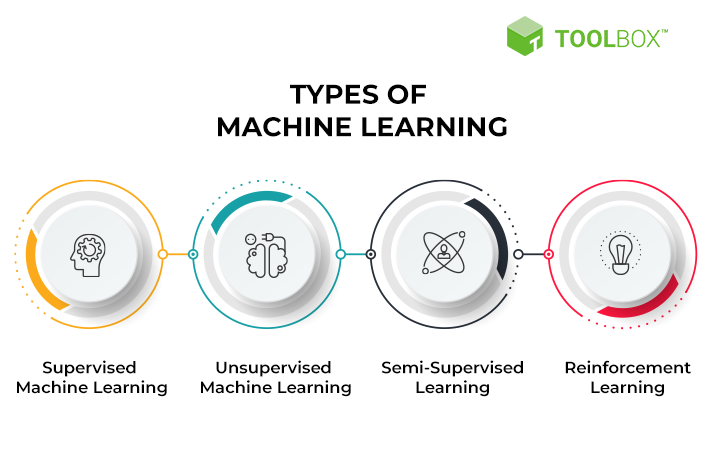

Some photos to describe those
Photos tell the Words. Think about what do they mean.
Cloud Computing

Big Data

You can read it from our blogs. We will describes as much as we made researhes.
And we will provide the link to the some effective resources
Simply put, cloud computing is the delivery of computing services—including servers, storage, databases, networking, software, analytics, and intelligence—over the Internet (“the cloud”) to offer faster innovation, flexible resources, and economies of scale
Big data refers to data that is so large, fast or complex that it's difficult or impossible to process using traditional methods. The act of accessing and storing large amounts of information for analytics has been around for a long time.
Machine learning is a subfield of artificial intelligence, which is broadly defined as the capability of a machine to imitate intelligent human behavior. Artificial intelligence systems are used to perform complex tasks in a way that is similar to how humans solve problems
Photos tell the Words. Think about what do they mean.

Cloud computing refers to the delivery of computing services, such as storage, networking, software, analytics, and intelligence, over the Internet (the cloud). It allows organizations to access and use these resources on-demand, rather than building and maintaining their own infrastructure. One of the main benefits of cloud computing is that it allows organizations to scale their computing resources up or down as needed, based on demand. This can be particularly useful for businesses that experience seasonal or sporadic spikes in demand. Additionally, cloud computing allows organizations to access and use the latest technologies without having to invest in hardware and software upfront. There are several types of cloud computing models, including public, private, hybrid, and multi-cloud. Public clouds are owned and operated by third-party companies, and resources are made available to the general public over the Internet. Private clouds are owned and operated by a single organization, and resources are made available only to that organization. Hybrid clouds combine elements of both public and private clouds, allowing organizations to use the most appropriate resources for each workload. Multi-cloud refers to the use of multiple cloud computing services from different providers. Overall, cloud computing provides organizations with flexibility, scalability, and access to the latest technologies, making it an attractive option for businesses of all sizes.


In this section, we will describe some fields that they solved.
What will be the future plans for our world?


Nowsaday,as we know we can't live withiout touching a technical objects.These topics that we mentioned above are occupying as a vital role of our morden world.I hope you all will enjoy our description.